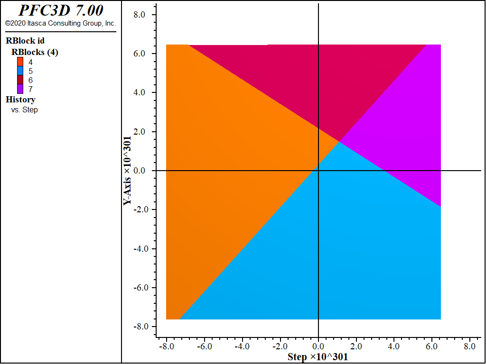

滑动楔体
/common/docproject/source/manual/examples.rst
引言
注意
本算例的项目文件可在 PFC 中查看或运行。[1]所用的数据文件（data files）列于本算例末尾。
本算例中进行了一个简单的楔体稳定性分析。临界摩擦角采用以 Python 编写的二分法计算。计算结果与解析解进行了比较。
PFC3D 模型
楔体由平面与立方体相交形成。楔体的滑动面由以下方式定义：
- F1：倾角 = 40°，倾向 = 130°，原点 = (0,0,1)
- F2：倾角 = 60°，倾向 = 220°，原点 = (0,-0.25,1)
首先创建一个定义模型“盒子”的刚性块体。随后使用 创建裂隙命令（fracture create） 命令引入裂隙。裂隙是有限尺寸的，呈圆盘形状。为保证其在模型盒子内的贯通性，采用较大的尺寸，例如 5m。然后使用 rblock cut 命令用这些裂隙切割已有的立方块体。
用于创建模型几何的命令为：
model new
model large-strain on
model domain extent -2. 2. condition destroy
rblock create box -1. 1.
fracture create dip 40. dip-dir 130. position 0,0,1 size 5
fracture create dip 60. dip-dir 220. position 0,-0.25,1 size 5
rblock cut fractures


图 1：初始系统。
边界条件为固定除楔体（ID=2 的块体）以外的所有块体。相应的命令为：
; 边界条件
rblock fix velocity spin range id 6 not
对所有接触施加同一组力学属性：黏聚力为零，法向与剪切刚度 = 1e7Pa/m，摩擦系数初始取值很大。块体的密度为 2000kg/m3，阻尼为 0.7，并受重力作用。相应的命令为：
; 模型参数
rblock attribute density 2000.0 damp 0.7
contact cmat default model linear ...
property kn 1.e7 ks 1.e7 fric 1.e20
; 重力加速度
model gravity 0,0,-10.
分析过程中将修改摩擦角，以计算使楔体处于极限平衡状态的临界摩擦角。首先，模型在摩擦很大的条件下运行至初始平衡。
解析解
解析解由 [GoodmanShi1985] 导出。
对于块体沿两个面滑动的情况，定义 \(N_1\) 与 \(N_2\) 为作用在两个滑动面上的法向力大小。
其中 \(n_i\) 是块体表面的法向，指向块体内部；\(\mathbf{A}\) 是作用于块体的总外施力（本算例中为块体自重）。
沿滑动方向的总剪力由下式给出：
其中 \(s_{12}\) 是由两个滑动面相交计算得到的滑动方向：
在节理中无黏聚力、并假定两个滑动面摩擦角相同的条件下，安全系数可计算为：
由此可推得保持稳定（最小安全系数为 1）的临界摩擦角。 本算例中临界摩擦角为 33.36°。该值由文件 analytical_fric.py 中的 Python 脚本计算得到。
数值分析
从在极大摩擦下受重力加载而处于平衡状态的系统出发，修改两个滑动面的摩擦角，以便借助用 Python 编写的二分法算法，寻找使块体保持稳定的最小临界角。每次改变摩擦角后，都将模型运行至平衡，并以最大步数为限（最大为 10000）。
对于给定的摩擦角，如果能在少于最大循环数的循环次数内达到平衡（不平衡力的平均比值为 1e-6），则认为块体是稳定的；否则认为块体不稳定。二分法算法中的一次 Python 循环包括：恢复初始状态；针对给定的摩擦角（即当前取值区间的中点）测试稳定性；并根据稳定性结果将该区间除以 2。当计算区间小于某一最小值（此处设为 0.001）时，即得到临界摩擦角的解。
运行该算法，得到临界摩擦角为 33.398°，与解析解相比误差为 0.128%。
参考文献
| [GoodmanShi1985] | Goodman, R. E. 和 Shi, G.，《Block Theory and its Application to Rock Engineering》，Prentice-Hall，伦敦（1979）。 |
数据文件
make_system.dat
; excerpt-sraw-start
model new
model large-strain on
model domain extent -2. 2. condition destroy
rblock create box -1. 1.
fracture create dip 40. dip-dir 130. position 0,0,1 size 5
fracture create dip 60. dip-dir 220. position 0,-0.25,1 size 5
rblock cut fractures
; excerpt-sraw-end
; excerpt-aslr-start
; 边界条件
rblock fix velocity spin range id 6 not
; excerpt-aslr-end
; excerpt-mhuu-start
; 模型参数
rblock attribute density 2000.0 damp 0.7
contact cmat default model linear ...
property kn 1.e7 ks 1.e7 fric 1.e20
; 重力加速度
model gravity 0,0,-10.
; excerpt-mhuu-end
; 监测
model history name 'aratio' mechanical ratio-average
; 在重力作用下达到平衡状态
model solve ratio-average 1e-5
model save 'ini.sav'
program return
analytical_fric.py
import itasca as it
import math
import numpy as np
from vec import vec3
it.command("""
python-reset-state off
model new
model restore \'ini.sav\'
""")
f1=it.dfn.fracture.find(1)
f2=it.dfn.fracture.find(2)
# 求各裂隙的法向量
n1=f1.normal()
n2=f2.normal()
#法向量指向块体内部
if f1.normal_z()<0:
n1=-n1
if f2.normal_z()<0:
n2=-n2
#应用 Goodman 与 Shi 理论
#主动力矢量
WW=348.074 #从刚体块 Python 对象中获取惯性质量 ???
A=vec3((0,0,-WW))
#计算滑动方向
n12=n1.cross(n2)
s12=n12/n12.mag()*np.sign(n12.dot(A))
#法向力
N1=-(A.cross(n2)).dot(n12)/(n12.mag())**2
N2=-(A.cross(n1)).dot(-n12)/(n12.mag())**2
#剪力
T12=A.dot(s12)
# 临界摩擦角（黏聚力为零时）
fric_theory=math.atan(T12/(N1+N2))*180./math.pi
print("Analytical critical friction angle is "+str(fric_theory)+" degrees")
pfc_fric.py
import itasca as it
import math
fric_limit1 = 0.0
fric_limit2 = 90.
while True:
it.command("""
model new
model restore \'ini.sav\'
rblock attribute displacement 0
rblock attribute velocity 0.
rblock history name \'zdisp\' displacement-z id 6
""")
cycle_max = it.cycle() + 10000
fric_angle = (fric_limit1 + fric_limit2)/2.
it.command("""
[fric_angle = {}]
contact property fric [math.tan(fric_angle*math.pi/180.)])
model solve ratio-average 1e-6 cycles-total 10000
fish define isStable
isStable = false
if rblock.num == 4
if mech.cycle < 10000
isStable = true
endif
endif
end
""".format(fric_angle))
if it.fish.call_function("isStable") is True: #稳定
fric_limit2 = fric_angle
print("Stable for "+str(fric_angle) +" degrees")
it.command("model save \'last_stable.sav\'")
else : #不稳定
fric_limit1 = fric_angle
print("Unstable for "+str(fric_angle) +" degrees")
it.command("model save \'last_unstable.sav\'")
#计算区间大小
min_interval = (fric_limit2 - fric_limit1)/2.
if min_interval<0.001:
break
print("Last stable friction angle interval is ["
+ str("%.3f" % fric_limit1) +";"
+ str("%.3f" % fric_limit2)+"] (degrees)")
_error=abs(fric_limit2-fric_theory)/fric_theory*100.0
print("The error relative to the theoretical solution ("
+ str("%.3f" % fric_theory)
+ ") is "+str("%.3f" % _error)+"%")
尾注
| [1] | 要在 PFC 中查看本项目，请使用程序菜单。
⮡ PFC |
| 这些内容对您有帮助吗？… | FLAC3D © 2019, Itasca | 原文更新于 2020 年 10 月 8 日 |
| 版权与免责声明 | ||